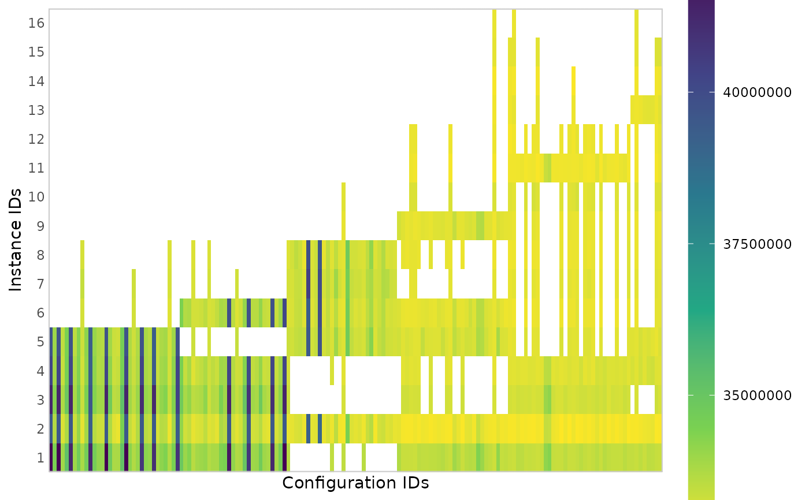

Creates a heatmap plot that shows all performance data seen by irace. Configurations are shown in the x-axis in the order in which they are created in the configuration process. Instances are shown in the y-axis in the order in which they where seen during the configuration run. This plot gives a general idea of the configuration process progression, the number of evaluations of each configuration show how long they survived in the iterated racing procedure.
plot_experiments_matrix(
irace_results,
filename = NULL,
metric = c("raw", "rpd", "rank"),
show_conf_ids = FALSE,
interactive = base::interactive()
)The data generated when loading the .Rdata file created by irace (or the filename of that file).
(character(1)) File name to save the plot, for example "~/path/example/filename.png".
Cost metric shown in the plot: "raw" shows the raw
values, "rpd" shows relative percentage deviation per instance and
"rank" shows rank per instance.
If TRUE, it shows the configuration IDs in the x-axis. Usually there are too many configurations, thus the default is FALSE.
(logical(1)) TRUE if the report may use interactive features (using plotly::ggplotly(), plotly::plot_ly() and DT::renderDataTable()) or FALSE if such features must be disabled. Defaults to the value returned by interactive(),
ggplot2::ggplot() object
iraceResults <- read_logfile(system.file(package="irace", "exdata",
"irace-acotsp.Rdata", mustWork = TRUE))
plot_experiments_matrix(iraceResults)
